Sample Materials
Samples of the materials I use in each course: syllabi, lecture slides, handouts, lab manual chapters, assignments, quizzes, exams and Canvas pages. Each cover is the first page of the file, and selecting it opens the file.
CHEM V101
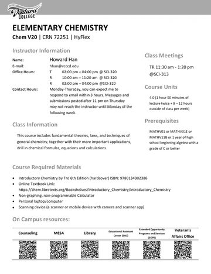
SyllabusCHEM V101 · Syllabus · 6 pages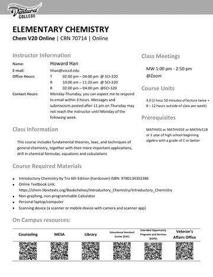
Syllabus, online sectionCHEM V101 · Syllabus · 6 pages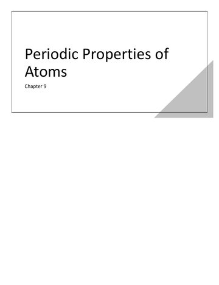
Chapter 9: Periodic Properties of Atoms, selected slidesCHEM V101 · Lecture slides · 9 slides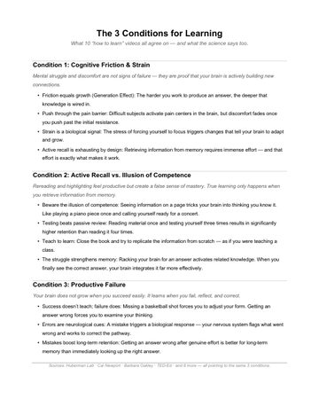
The 3 Conditions for Learning (AI orientation)CHEM V101 · Handout · 2 pages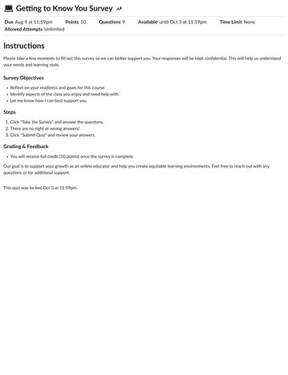
Getting to Know You surveyCHEM V101 · Assignment · Image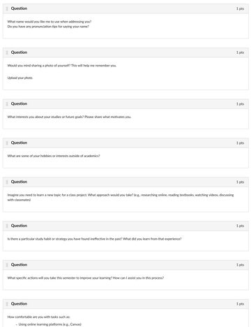
Getting to Know You survey, questionsCHEM V101 · Assignment · Image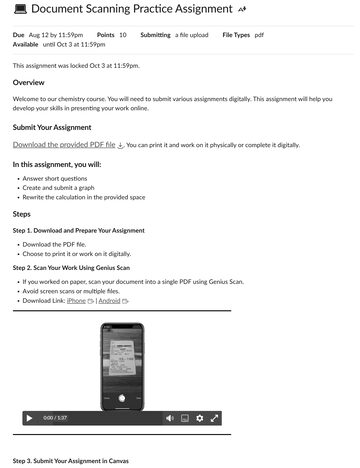
Document scanning practice, Canvas pageCHEM V101 · Assignment · Image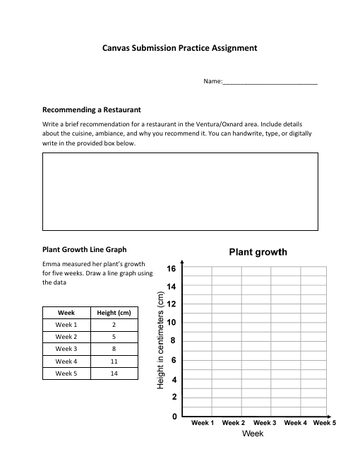
Document scanning practice, worksheetCHEM V101 · Assignment · 3 pages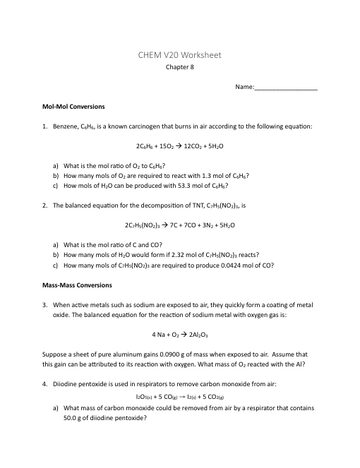
Chapter 8 worksheetCHEM V101 · Assignment · 4 pages- Chapter 8 worksheet, worked solutionsCHEM V101 · Assignment · 15 pages
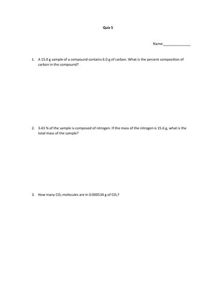
Quiz 5CHEM V101 · Quiz · 2 pages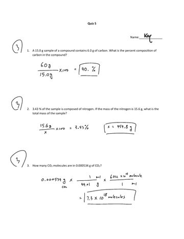
Quiz 5, keyCHEM V101 · Quiz · 2 pages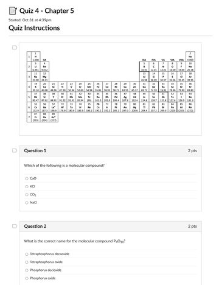
Online quiz in CanvasCHEM V101 · Quiz · Image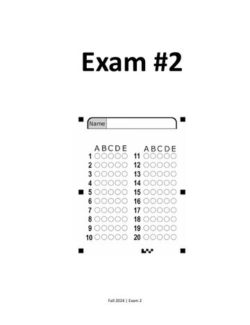
Exam 2CHEM V101 · Exam · 7 pages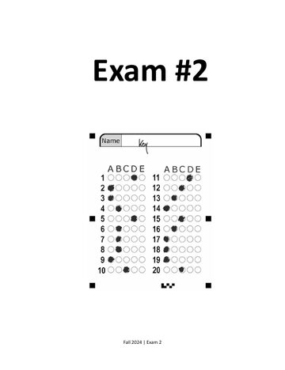
Exam 2, keyCHEM V101 · Exam · 7 pages


CHEM V101 Lab
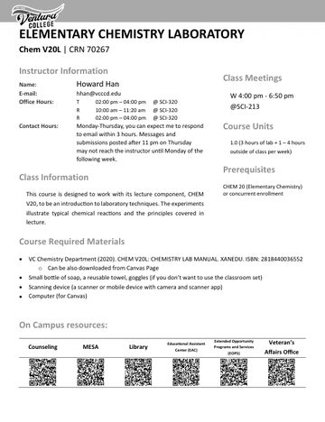
SyllabusCHEM V101 Lab · Syllabus · 5 pages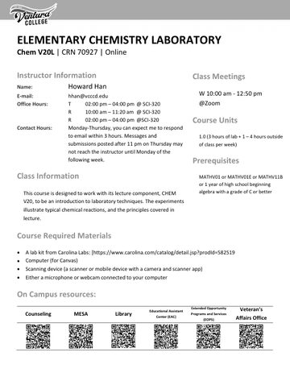
Syllabus, online sectionCHEM V101 Lab · Syllabus · 5 pages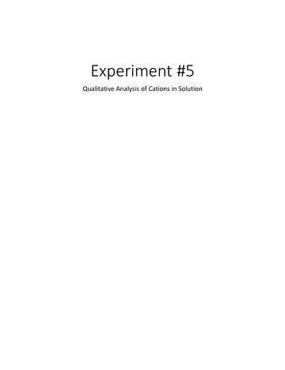
Experiment 5 pre-lab slidesCHEM V101 Lab · Lecture slides · 11 slides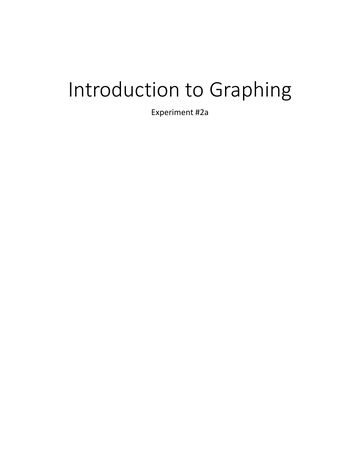
Introduction to Graphing, online sectionCHEM V101 Lab · Lecture slides · 14 slides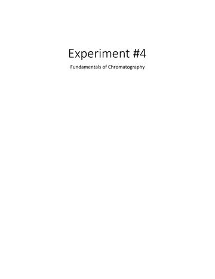
Experiment 4 pre-lab slides, online sectionCHEM V101 Lab · Lecture slides · 24 slides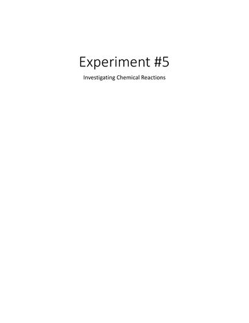
Experiment 5 pre-lab slides, online sectionCHEM V101 Lab · Lecture slides · 12 slides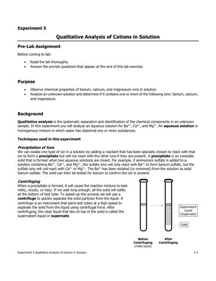
Experiment 5: Qualitative Analysis of CationsCHEM V101 Lab · Lab manual · 12 pages- Online lab: density of sugar solutions, my trial runCHEM V101 Lab · Lab report · Image
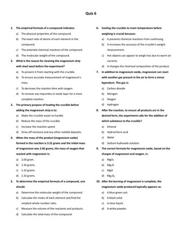
Lab quiz 6CHEM V101 Lab · Quiz · 1 page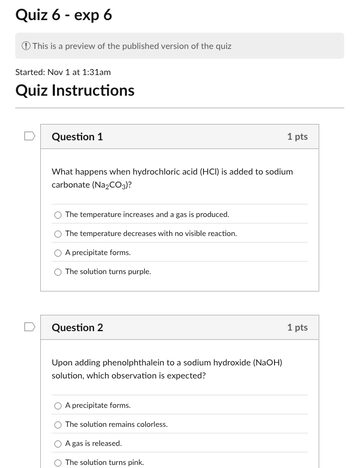
Online lab quiz in CanvasCHEM V101 Lab · Quiz · Image


CHEM V104
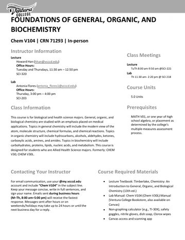
SyllabusCHEM V104 · Syllabus · 9 pages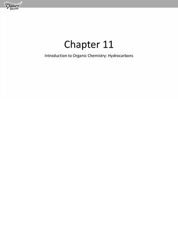
Chapter 11: Introduction to Organic Chemistry, selected slidesCHEM V104 · Lecture slides · 10 slides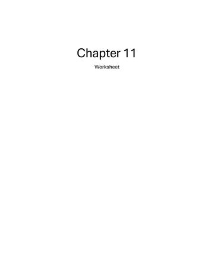
Chapter 11 worksheetCHEM V104 · Assignment · 8 pages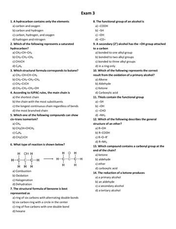
Exam 3CHEM V104 · Exam · 3 pages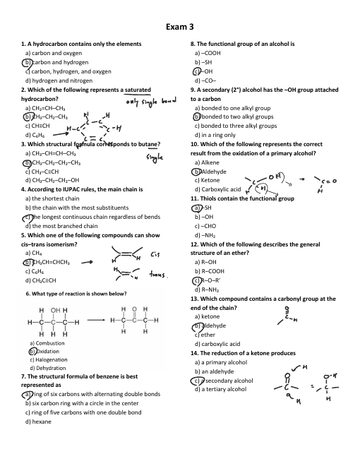
Exam 3, keyCHEM V104 · Exam · 3 pages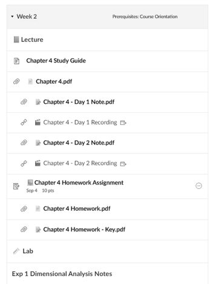
Weekly moduleCHEM V104 · Canvas · Image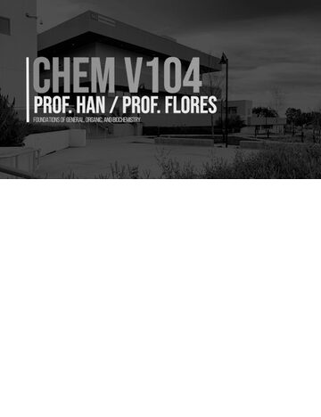
Course card, Han / Flores sectionCHEM V104 · Canvas · Image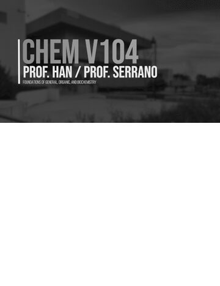
Course card, Han / Serrano sectionCHEM V104 · Canvas · Image


CHEM V120B
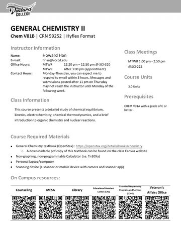
SyllabusCHEM V120B · Syllabus · 5 pages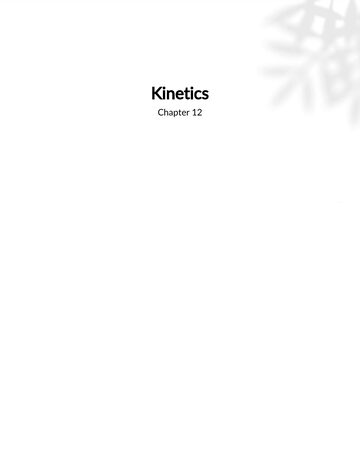
Chapter 12: Kinetics, selected slidesCHEM V120B · Lecture slides · 10 slides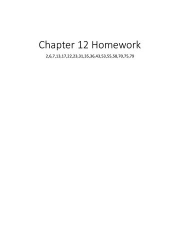
Chapter 12 homeworkCHEM V120B · Assignment · 18 pages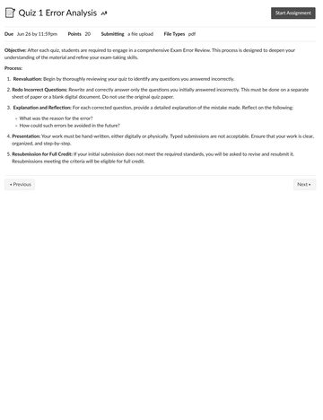
Quiz 1 error analysisCHEM V120B · Assignment · Image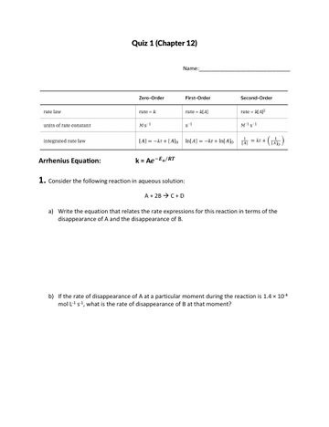
Quiz 1CHEM V120B · Quiz · 5 pages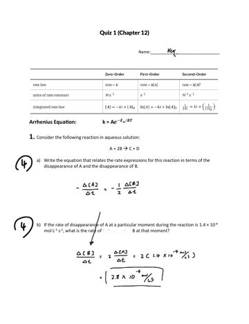
Quiz 1, keyCHEM V120B · Quiz · 5 pages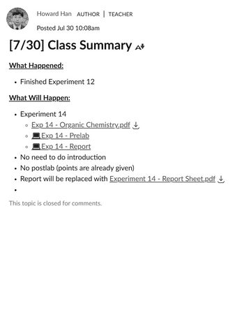
Class summary announcementCHEM V120B · Canvas · Image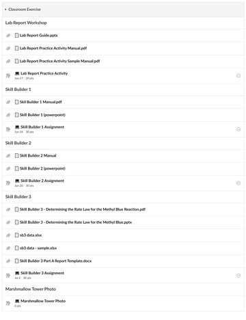
Module: classroom exercisesCHEM V120B · Canvas · Image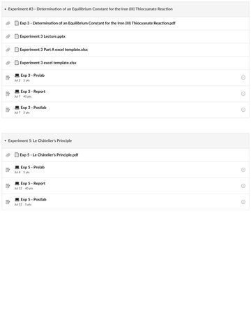
Module: experimentsCHEM V120B · Canvas · Image


CHEM V120B Lab
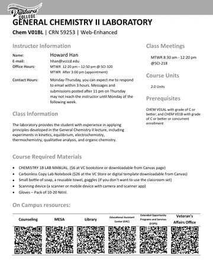
SyllabusCHEM V120B Lab · Syllabus · 4 pages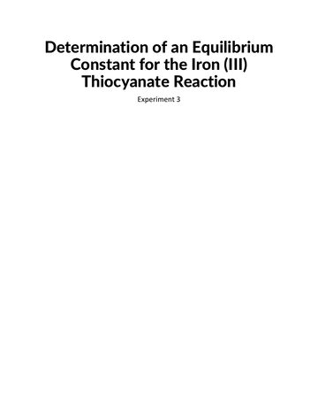
Experiment 3 pre-lab slidesCHEM V120B Lab · Lecture slides · 10 slides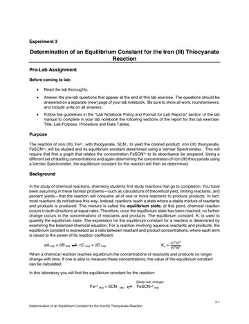
Experiment 3: Equilibrium ConstantCHEM V120B Lab · Lab manual · 9 pages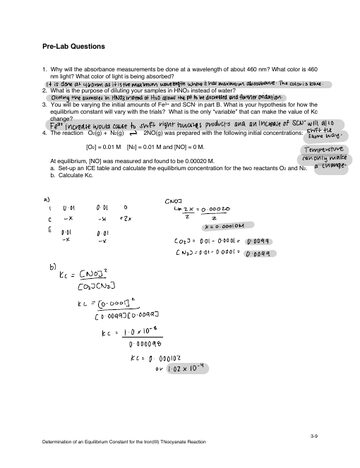
Experiment 3 pre-lab, sample answersCHEM V120B Lab · Lab report · 1 page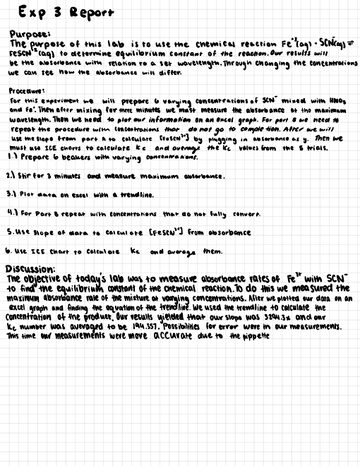
Experiment 3 lab report, sampleCHEM V120B Lab · Lab report · 4 pages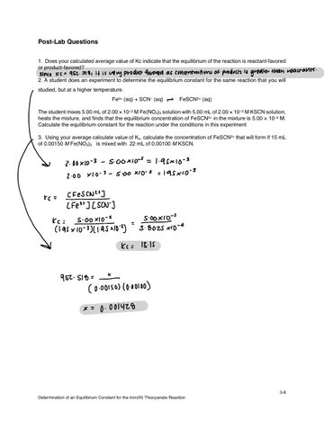
Experiment 3 post-lab, sample answersCHEM V120B Lab · Lab report · 1 page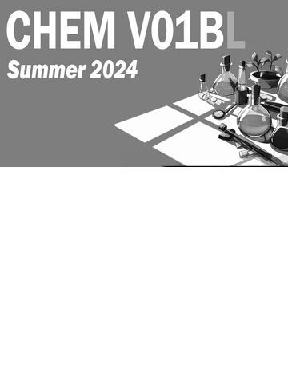
Course bannerCHEM V120B Lab · Canvas · Image